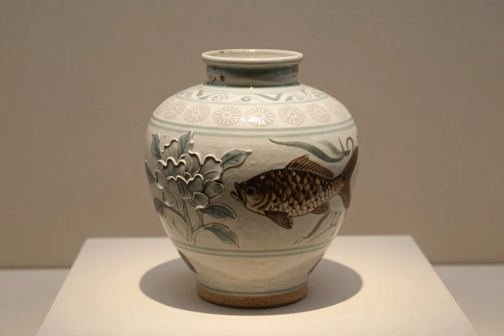

керамика · 1400–1600 · также: Посуда пунчхон, Корейская каменная масса с ангобным декором, Посуда мисима
Корейская серая каменная масса, покрытая белым ангобом и тонкой прозрачной глазурью. Гончары штампуют, режут, расписывают и мажут ангоб смелыми свободными узорами. Результат простой, прямой и живой.

Главная идея
Простая серая каменная масса оживает, когда свободная рука наносит на неё белый ангоб кистью, штампом или резьбой, не боясь грубости.
Принципы дизайна
Покрывайте серый черепок толстым белым ангобом, окунанием или кистью, до глазури.
Штампуйте мелкие повторяющиеся знаки цветка или круга в кожетвёрдой глине и заполняйте белым ангобом.
Процарапывайте рисунок сквозь белый ангоб до тёмного черепка (сграффито) для смелой линии.
Быстро мажьте ангоб соломенной кистью, оставляя на поверхности ритмичные следы.
Пишите железно-коричневые линии по ангобу, для рыб, цветов и листьев, в свободной манере.
Покрывайте вещь тонкой прозрачной или серо-зелёной глазурью и обжигайте при 1180–1250 °C.
Держите форму тяжёлой и крепкой: плоская бутылка, круглый кувшин или широкая чаша.